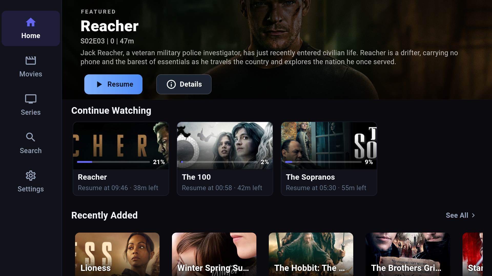
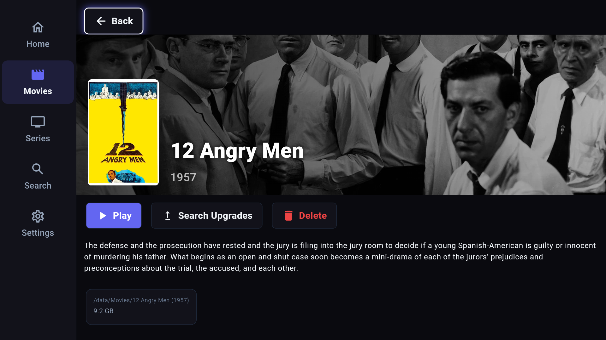
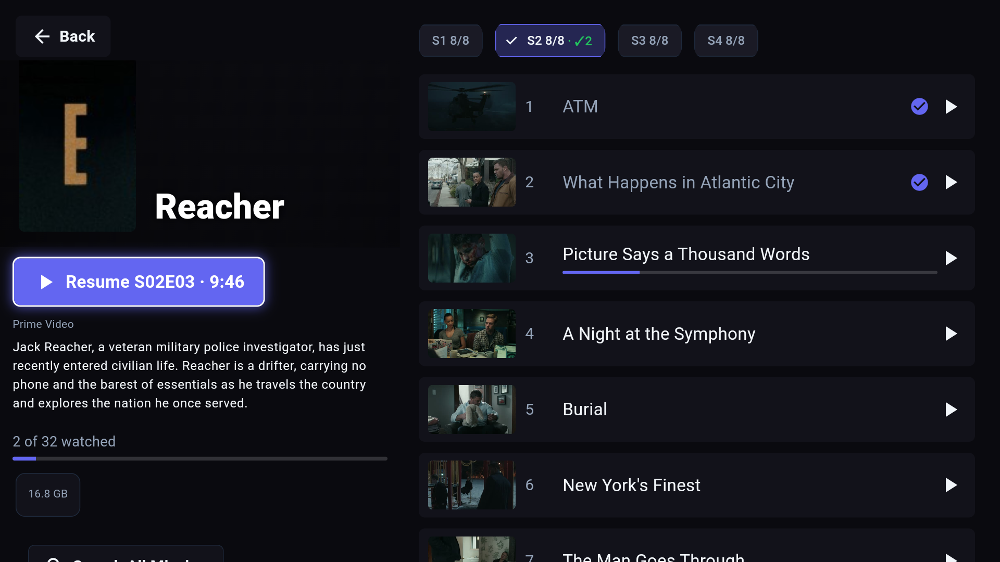
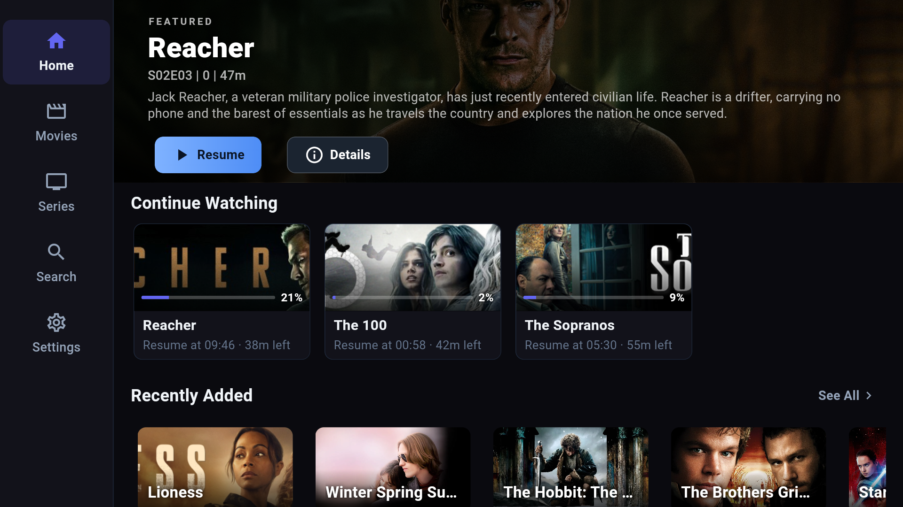
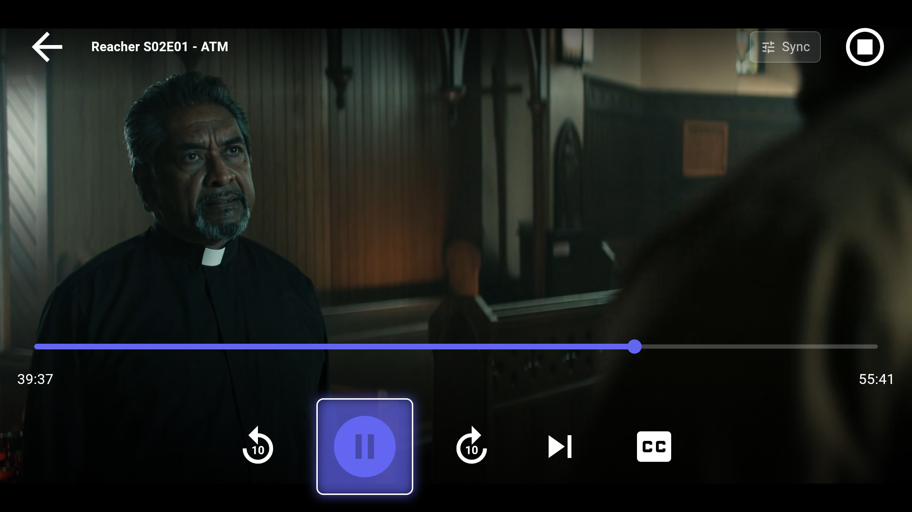
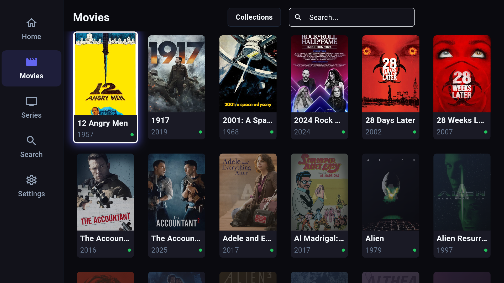
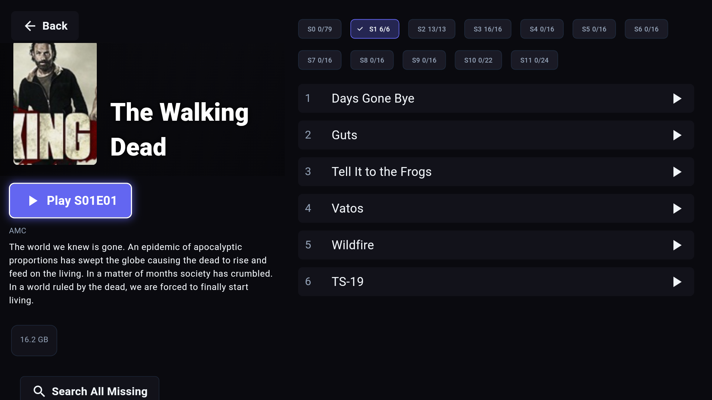

Everything shipped to the media server and the living-room client between 2026-11-07 19:19 and 2026-11-08 07:19 (CST). Every number below is a measured value — a device capture, a test count, a log line, a query — not an estimate.
The window was one long pass at the goal: make the TV a device you can actually watch from, and make the backend survive unattended operation. Most of the damage was silent — automation burning work against missing credentials, a scan that never imported anything, a TMDB token wired to the wrong auth header.
Ten-foot UI work was driven by reading the screen from the sofa (device screenshots over ADB), not from code review. Twelve builds were installed and re-inspected during the window.



S2 8/8 · ✓2) and the pane
2 of 32 watched.
backdropUrl and falls back to the poster only when no backdrop exists.


1.3.12 (36)) plus server URL, autoplay and home-app mode.| What a viewer hit | Root cause | Fix |
|---|---|---|
| Hero Details started the video | _openHeroDetail called the resume path for continue-watching items — Details was a second Resume button |
Details resolves the series/movie and pushes its detail screen; regression test mounts the real HomeScreen and presses Select |
| Same subtitle listed three times | Duplicate MediaFileVariant rows each printed their tracks; the empty state sat inside the per-variant loop |
Flatten across variants, dedupe by language/forced/HI, one empty state |
| Episode rows were text-only | TVDB episode art is not populated in this library | EpisodeThumbnailService: ffmpeg frame at 90 s (fallback 10 s), 480 px JPEG, bounded to 40/run every 10 min |
| Watched / in-progress invisible on detail | Episode rows never received the playback state the API already returned | Rows rebuilt from playbackState; watched summary, progress bar and chip tallies added |
| "Resume S01E01 · 23:20" overflowed its row | Fixed-width CTA label | Flexible + ellipsis; new test pins it at 1280 px |
| Meaningless "Any" quality badge | API falls back to the quality-profile name | Suppressed on the shared FileInfoCard when not meaningful |
| Search used release types the server rejects (HTTP 422) | Client sent movie/episode where the API expects its own enum |
Send the server's type values |
Triage kept receiving "Health check failed" records that were my own deployments. Three iterations fixed it properly:
probeHealth now probes via _probeOnce()
and does bookkeeping exactly once./api/system/status or
/api/client-errors; failures spool while offline; every client failure is ingested
for triage.2026-11-07T21:57:08.623Z, 20 records total,
zero new for many rounds.
Two independent bottlenecks were measured with real timings before touching code. The lesson both
times: the suspicious thing (existence probes, readdir) was not the expensive thing.
| Path | Before | After | Why it was slow |
|---|---|---|---|
| Library scan (full library) | 793 s | 89 s | ensureVariant costs 115 ms/row on USB-backed SQLite (~3,100 fsync writes for rows that were already correct). Now heals only missing variants; synchronous=NORMAL; probes at concurrency 16 |
| Server boot | 33.6 s | ~1.5 s | VariantBackfillService ran ~3,500 individual findFirst queries — one findMany per media type now |
| Activity poll (every second) | 248k-row fetch | COUNT + 5 s | Pulled an entire id list each tick; event lag went to 0 ms and CPU from 86 % to 0.1 % |
subtitle-wanted-search trigger |
9.5 s | 18 ms | Re-synced every recent/failed variant; guard now idles when no provider is configured |
| Folder import walk | 273 s | depth-first | fs.readdir({recursive:true}) is 95 s on /data/Movies where a depth-first walk is 246 ms |
| Translation call | hung 17+ min | 120 s cap | Provider clients have no request timeout; the chain is now wrapped in a Promise.race deadline and long jobs log a warning |
The stored credential is a v4 read token (JWT) but every call site appended it as
?api_key=, so all movie metadata returned 401 Invalid API key.
A v4-aware helper existed with no callers; all ten call sites now use it
(Authorization: Bearer) and the HTTP client receives { headers }.
Live: movie search works again.
/data/TV held 54 series folders; the database knew 28. The daily scan reported
SUCCESS after 14.7 minutes and added nothing — it only revalidates rows. A folder importer now
runs the real pipeline with a confidence gate on the folder title (filename-derived
titles imported 8 wrong shows, rolled back from backup).
The scan nulls the path of any row it cannot stat, and it runs at 02:00 on a USB drive that sleeps. Two guards: a root that yields no readable files is skipped, and a scan that loses more than half of its rows refuses to mark anything missing.
importSeries matched files only through parsedInfo, which the scan
response never carries — the show appeared with seasons and episodes but no files. The
basename is now parsed when parsedInfo is absent, so any caller links correctly.
Production telemetry showed two scheduled jobs spinning against missing credentials: subtitle
download failed 1,900× and search 9,069× in 24 h, and wanted-search wrote 11,582 failed
SEARCH_EXECUTED events in 24 h — all while 1,740 wanted rows sat idle and nothing in
the UI said why. Both queues now detect the missing configuration, idle with a single actionable
log line, and the UI explains it:
ManualSubtitleProvider.isConfigured(),
SubtitleFetchProvider.hasUsableProvider(), skippedNoProvider in stats, 0
activity events written per skipped cycle (was 100).| Measure | At 19:19 | At 07:19 | How |
|---|---|---|---|
| Movies | 550 | 567 | Movie folder import once TMDB auth was fixed |
| Series | 28 | 43 | TV folder importer with folder-title confidence gate |
| Episodes with a file | 2,469 | 2,623 | Missing-episode import for series already registered |
| Episode stills cached | 0 | 2,623 | Local ffmpeg extraction, 40 per 10-minute run |
| File variants | — | 3,799 | Heal-only variant backfill |
isConfigured required root folders and an indexer, and this server has no
indexer — so every route redirected to /setup while the library held 550 movies.
A populated library is the strongest signal setup already happened:
setupCompleted || hasLibrary || (rootFolders && indexers).
It derived itself from the last 20 activity events filtered for import types, and the feed is
dominated by subtitle/search events. It now reads the library directly (movies + series sorted
by added), links each row to its detail page, and explains the empty state.
The OLED theme's accent is white by design, so bg-accent-success text-text-primary
rendered a blank white pill. The label uses text-text-inverse, with a regression
test pinning the pairing.
The first cut assumed indexerApi.list() returned { data }; it returns
an array, so the banner silently never showed. The Wanted page and Settings → Subtitles now
surface both idle states.
Twelve client builds went out in one night without the viewer doing anything: build, publish to the server manifest, silent ADB update.
| Build | Code | Headline |
|---|---|---|
| 1.3.1 | 25 | Restart-proof health polling, subtitle-idle notice |
| 1.3.2 | 26 | Watched progress on the series detail screen |
| 1.3.3 | 27 | One client error per outage, not per poll |
| 1.3.4 | 28 | Outage reported only after ~90 s |
| 1.3.5 | 29 | Episode thumbnails generated from the files |
| 1.3.6–1.3.8 | 30–32 | Health bookkeeping, quality badge, hero rotation |
| 1.3.9 | 33 | Hero rotates when the resume is stale |
| 1.3.10 | 34 | Recently Added uses landscape art |
| 1.3.11 | 35 | Subtitle tracks listed once |
| 1.3.12 | 36 | Movie Play on the first screen; deduped tracks |
Deployment is hands-off: the APK is published to client-updates/manifest.json
(sha256 + notes), the client offers it and
automation/scripts/tv-updater.sh + mediarr-tv-updater.timer install it
silently over network ADB at 04:00. Kiosk launcher mode was verified across a reboot, so the TV
always comes back to Mediarr.
With zero indexers the wanted queue cannot search. Rather than burn the CPU writing 11,582 failed searches a day, the automation now idles and the Wanted page says so. One indexer (Settings → Indexers) turns everything back on.
1,740 wanted subtitle rows are queued and idle. OpenSubtitles or SubDL keys unblock the queue; Settings → Subtitles shows the notice, and the translation deadline keeps a hung provider from parking the scheduler either way.
The laptop routed through a VPN during the window, so the bilingual cycle fails its three bounded calls instead of hanging. The cycle still completes (~6 min, 3 failures) and the scheduler slot is freed. Not a code defect — routing.
Agent-run orchestration, receipts and disabling the legacy
music-orchestrator/adult-orchestrator belong to the other session's
track. Legacy services still in use and intentionally untouched: jellyfin-go
(scanning 6 libraries), transmission-daemon (2 live downloads),
fetch-monitor.timer.
curl -s http://127.0.0.1:5174/api/health →
{"status":"ok","scheduler":{"scheduledTaskCount":10}}, event-loop lag 1 ms.
Library:
sqlite3 /config/mediarr.db "select count(*) from Episode where path is not null" →
2,623. Device: adb -s 192.168.10.60:5555 exec-out screencap -p.
| SHA | Time | Subject |
|---|---|---|
| 8015f816 | 07:15 | fix(tv): movie Play is on the first screen; subtitle tracks deduped |
| ca5d121c | 07:01 | fix(tv): list subtitle tracks once across duplicate file variants |
| 0b44e828 | 06:50 | feat(tv): Recently Added uses landscape art instead of cropped posters |
| 46597698 | 06:41 | fix(server): bound translation calls and warn on long-running jobs |
| c36cf8b4 | 06:29 | feat(tv): the hero rotates when the resume has gone stale |
| 912f3d7c | 06:16 | fix(server): bulk import links episode files from their filenames |
| 0f64151a | 06:06 | fix(tv): count one health failure per probe, not two |
| 9221c854 | 06:02 | fix(app): indexerApi.list() returns an array, so the idle banner never rendered |
| b5a5fbdf | 05:59 | fix: wanted-search idled with no indexers + a visible notice |
| be5fb457 | 05:51 | fix(tv): hero Details opened playback, not the detail screen |
| 7e651d70 | 05:16 | feat(tv): episode thumbnails generated from the video files |
| 7704bb57 | 04:43 | fix(tv): only report an outage after it survives ~90 s |
| 7eedc715 | 04:34 | perf(server): depth-first walk in the folder importer too |
| 49a36597 | 04:27 | perf(server): library scan 793 s → 89 s |
| d562f0e6 | 04:03 | feat(server): import episodes added to existing series; cache scan readdirs |
| 858b2d9f | 03:35 | fix(server): never unlink the library because the drive went away |
| 2e2b15cf | 03:29 | test(server): expect the { headers } options object the HTTP client takes |
| 6d616840 | 03:27 | fix(server): TMDB v4 token sent as api_key — movie metadata was dead |
| c0172049 | 03:12 | fix(tv): report one error per outage, not one per health poll |
| 15393953 | 03:01 | feat(server): import TV folders the scan never registers (+28 → 42 series) |
| 7f349b7a | 02:37 | feat(tv): watched progress on the series detail screen |
| c72b4dad | 02:19 | docs(track): record the SPA audit findings and fixes |
| 39546d2e | 02:19 | fix(app): Monitored toggle was white-on-white |
| 6d9d49d7 | 02:12 | fix(app): dashboard "Recently Added" shows real media, not filtered activity |
| bcd9e11a | 01:47 | fix(server): an in-use library counts as configured (SPA was locked behind setup) |
| 8b169f92 | 01:42 | feat: restart-proof health polling + surface the idle subtitle automation |
| afdf8ad0 | 01:30 | fix(server): guard the scheduled subtitle path too — trigger 9.5 s → 18 ms |
| 408c9aed | 01:17 | fix(server): stop subtitle automation from draining the queue with no provider |
| a04ff8ff | 01:03 | feat(tv): watched ticks, resume bars, honest build label, subtitles clear of controls |
| 0ea5ed63 | 00:32 | feat(tv): designed artwork placeholder for titles with no poster |
| 7e6455b4 | 00:21 | docs(plan): record the TV client phase and the boot-stall item as done |
| 388262de | 00:19 | docs(track): record the boot-stall fix and its before/after numbers |
| e7073af6 | 00:19 | fix(server): boot stall 33.6 s → 1.5 s (3,500 startup queries) |
| 0f7d7352 | 00:11 | fix(tv): browse tiles show real metadata at 10-foot sizes |
| f1d6335b | 00:00 | feat(tv): home screen budget — actions visible, continuation row + next row on the fold |
| adf016af | 23:34 | feat(tv): transport overlay v2 — play/pause focus, bigger targets, labelled Sync |
| cd137e23 | 22:54 | docs(track): record the activity-poll root cause and device proof of the fix |
| 8f03dd70 | 22:50 | fix(server): activity poll saturated the event loop; add stall telemetry |
| 4201c807 | 22:07 | chore(triage): watermark after 422 release-search batch |
| 68b2f789 | 22:03 | fix(tv): release search used type values the server rejects (HTTP 422) |
| 6ae9f681 | 21:55 | docs(ui): HTML change report with generative UI mockups |
| 46c91c33 | 21:49 | feat(brand): Mediarr app icon, adaptive icon, TV banner and web favicons |
| f0780677 | 21:29 | chore(triage): advance client-error watermark after triaging the 21:00–21:15 batch |
| 995ab786 | 21:28 | docs(track): kiosk mode verified by reboot; first telemetry catches traced to server stalls |
| 2ea4e3ca | 21:23 | feat(tv): dedicated-box launcher mode + auto-retry on slow open |
| 48481db5 | 20:52 | docs(track): record the live TV playback session and telemetry design |
| d9b299ca | 20:50 | fix(tv): session-owned playback, cleartext LAN, deferred-stop guards |
| c0f95f31 | 20:30 | feat(client): report all failures, spool while offline |
| dfdff342 | 20:30 | feat(telemetry): ingest every TV client failure for triage |